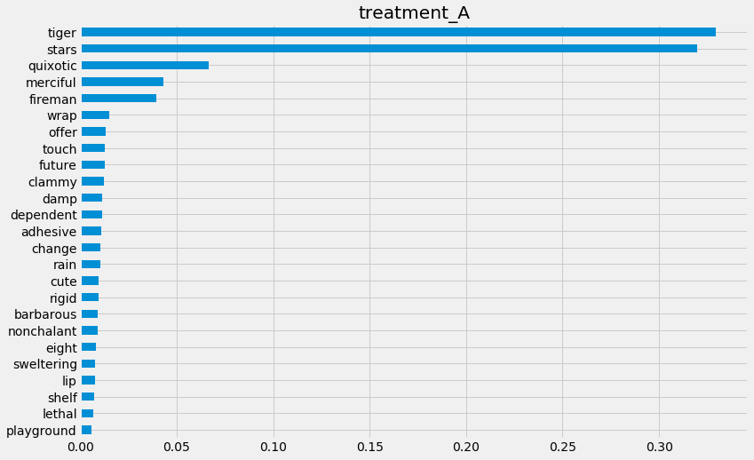
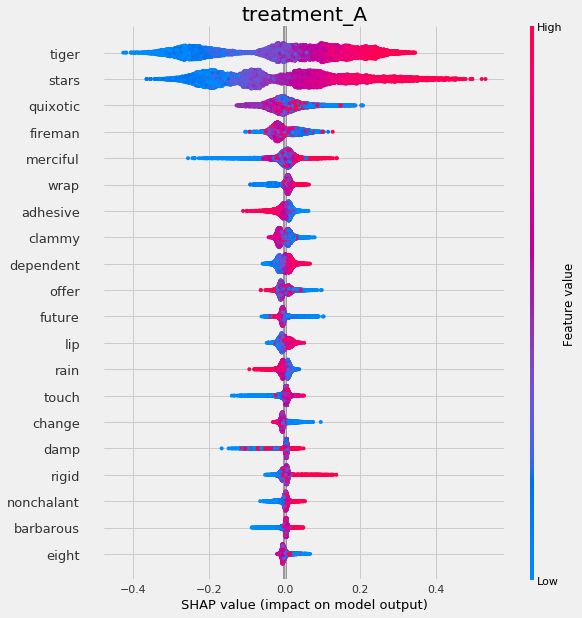
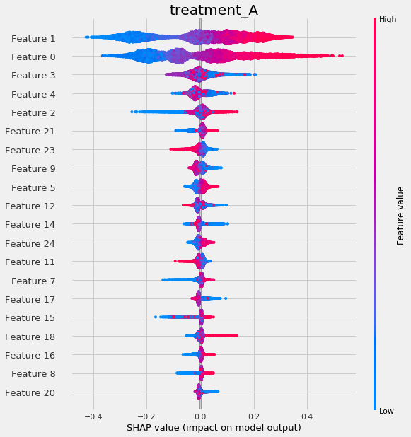
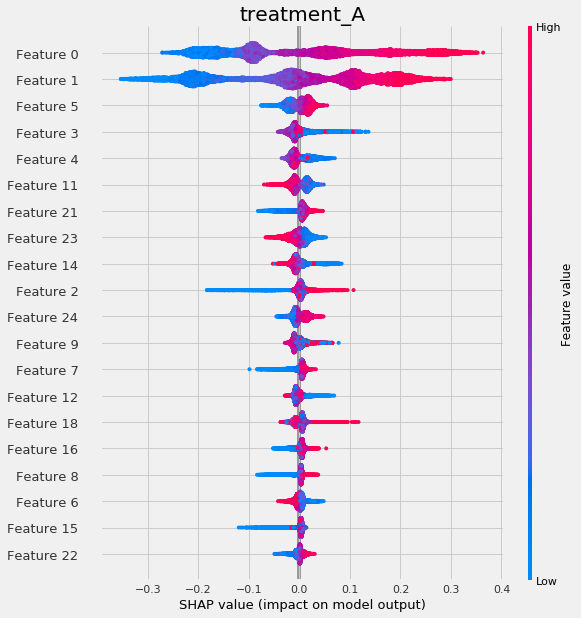
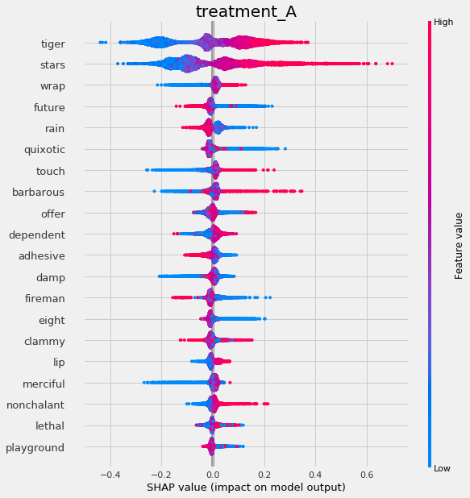

S Learner
Contents
import pandas as pd
import numpy as np
import matplotlib.pyplot as plt
from sklearn.ensemble import RandomForestRegressor, GradientBoostingRegressor
from sklearn.tree import DecisionTreeRegressor
from xgboost import XGBRegressor
from lightgbm import LGBMRegressor
from causalml.inference.meta import BaseSRegressor, BaseTRegressor, BaseXRegressor, BaseRRegressor
from causalml.inference.tree import UpliftTreeClassifier, UpliftRandomForestClassifier
from causalml.dataset.regression import synthetic_data
from sklearn.linear_model import LinearRegression
import shap
import matplotlib.pyplot as plt
import time
from sklearn.inspection import permutation_importance
from sklearn.model_selection import train_test_split
import os
import warnings
warnings.filterwarnings('ignore')
os.environ['KMP_DUPLICATE_LIB_OK'] = 'True' # for lightgbm to work
%reload_ext autoreload
%autoreload 2
%matplotlib inline
The sklearn.utils.testing module is deprecated in version 0.22 and will be removed in version 0.24. The corresponding classes / functions should instead be imported from sklearn.utils. Anything that cannot be imported from sklearn.utils is now part of the private API.
plt.style.use('fivethirtyeight')
n_features = 25
n_samples = 10000
y, X, w, tau, b, e = synthetic_data(mode=1, n=n_samples, p=n_features, sigma=0.5)
w_multi = np.array(['treatment_A' if x==1 else 'control' for x in w])
e_multi = {'treatment_A': e}
feature_names = ['stars', 'tiger', 'merciful', 'quixotic', 'fireman', 'dependent',
'shelf', 'touch', 'barbarous', 'clammy', 'playground', 'rain', 'offer',
'cute', 'future', 'damp', 'nonchalant', 'change', 'rigid', 'sweltering',
'eight', 'wrap', 'lethal', 'adhesive', 'lip'] # specify feature names
model_tau = LGBMRegressor(importance_type='gain') # specify model for model_tau
S Learner#
base_algo = LGBMRegressor()
# base_algo = XGBRegressor()
# base_algo = RandomForestRegressor()
# base_algo = LinearRegression()
slearner = BaseSRegressor(base_algo, control_name='control')
slearner.estimate_ate(X, w_multi, y)
array([0.56829617])
slearner_tau = slearner.fit_predict(X, w_multi, y)
Feature Importance (method = auto)#
slearner.get_importance(X=X,
tau=slearner_tau,
normalize=True,
method='auto',
features=feature_names)
{'treatment_A': tiger 0.419967
stars 0.413894
quixotic 0.072241
merciful 0.056910
fireman 0.032434
wrap 0.000407
clammy 0.000383
change 0.000306
lip 0.000299
touch 0.000281
adhesive 0.000253
playground 0.000235
sweltering 0.000233
offer 0.000232
rigid 0.000217
shelf 0.000208
barbarous 0.000192
damp 0.000192
rain 0.000184
dependent 0.000180
nonchalant 0.000171
lethal 0.000159
cute 0.000154
eight 0.000138
future 0.000131
dtype: float64}
slearner.plot_importance(X=X,
tau=slearner_tau,
normalize=True,
method='auto',
features=feature_names)

Feature Importance (method = permutation)#
slearner.get_importance(X=X,
tau=slearner_tau,
method='permutation',
features=feature_names,
random_state=42)
{'treatment_A': tiger 0.963026
stars 0.869475
quixotic 0.163553
merciful 0.101724
fireman 0.065210
touch 0.000389
clammy 0.000370
adhesive 0.000180
wrap 0.000150
sweltering 0.000144
change 0.000104
lethal 0.000095
damp 0.000071
shelf 0.000040
rigid 0.000028
barbarous 0.000026
playground 0.000021
nonchalant -0.000014
cute -0.000020
rain -0.000034
offer -0.000046
eight -0.000054
dependent -0.000060
future -0.000091
lip -0.000097
dtype: float64}
start_time = time.time()
slearner.get_importance(X=X,
tau=slearner_tau,
method='permutation',
features=feature_names,
random_state=42)
print("Elapsed time: %s seconds" % (time.time() - start_time))
Elapsed time: 37.788124799728394 seconds
slearner.plot_importance(X=X,
tau=slearner_tau,
method='permutation',
features=feature_names,
random_state=42)

Feature Importance (sklearn.inspection.permutation_importance)#
start_time = time.time()
X_train, X_test, y_train, y_test = train_test_split(X, slearner_tau, test_size=0.3, random_state=42)
model_tau_fit = model_tau.fit(X_train, y_train)
perm_imp_test = permutation_importance(
estimator=model_tau_fit,
X=X_test,
y=y_test,
random_state=42).importances_mean
pd.Series(perm_imp_test, feature_names).sort_values(ascending=False)
print("Elapsed time: %s seconds" % (time.time() - start_time))
Elapsed time: 14.822510957717896 seconds
pd.Series(perm_imp_test, feature_names).sort_values(ascending=False)
tiger 0.963026
stars 0.869475
quixotic 0.163553
merciful 0.101724
fireman 0.065210
touch 0.000389
clammy 0.000370
adhesive 0.000180
wrap 0.000150
sweltering 0.000144
change 0.000104
lethal 0.000095
damp 0.000071
shelf 0.000040
rigid 0.000028
barbarous 0.000026
playground 0.000021
nonchalant -0.000014
cute -0.000020
rain -0.000034
offer -0.000046
eight -0.000054
dependent -0.000060
future -0.000091
lip -0.000097
dtype: float64
pd.Series(perm_imp_test, feature_names).sort_values().plot(kind='barh', figsize=(12, 8))
plt.title('Test Set Permutation Importances')
Text(0.5, 1.0, 'Test Set Permutation Importances')
perm_imp_train = permutation_importance(
estimator=model_tau_fit,
X=X_train,
y=y_train,
random_state=42).importances_mean
pd.Series(perm_imp_train, feature_names).sort_values(ascending=False)
tiger 0.912573
stars 0.871412
quixotic 0.164476
merciful 0.104541
fireman 0.064374
lip 0.001931
lethal 0.001112
future 0.001104
clammy 0.000977
touch 0.000935
damp 0.000868
wrap 0.000868
change 0.000824
sweltering 0.000806
adhesive 0.000732
offer 0.000690
rain 0.000652
barbarous 0.000525
rigid 0.000492
eight 0.000458
dependent 0.000438
cute 0.000419
nonchalant 0.000405
shelf 0.000400
playground 0.000354
dtype: float64
pd.Series(perm_imp_train, feature_names).sort_values().plot(kind='barh', figsize=(12, 8))
plt.title('Training Set Permutation Importances')
Text(0.5, 1.0, 'Training Set Permutation Importances')

Shapley Values#
shap_slearner = slearner.get_shap_values(X=X, tau=slearner_tau)
shap_slearner
{'treatment_A': array([[ 4.10078017e-02, -3.44817262e-02, -5.43404776e-03, ...,
-4.74545331e-04, -1.51053586e-03, 3.90095411e-03],
[-7.48726271e-02, 5.93780768e-02, -1.41883322e-02, ...,
7.46974369e-04, -4.48063259e-04, -1.89122689e-03],
[ 8.76198804e-02, -1.16128067e-02, 4.81884470e-03, ...,
-4.35674464e-04, 1.93345867e-03, 3.70921426e-03],
...,
[ 1.97191229e-01, 1.04795472e-01, 6.66297704e-03, ...,
-4.94229406e-04, 1.23164980e-03, -1.94624556e-03],
[-2.51788728e-01, 1.66874562e-02, 3.63517776e-02, ...,
-4.77522143e-04, 1.13078435e-03, 1.69601440e-03],
[-3.20539506e-02, 2.13426166e-01, -7.80250031e-02, ...,
-1.84885894e-04, 1.69764654e-04, -3.78072076e-03]])}
np.mean(np.abs(shap_slearner['treatment_A']),axis=0)
array([0.13950704, 0.14386761, 0.02545777, 0.04069884, 0.02323508,
0.00065427, 0.00049449, 0.00085658, 0.00047613, 0.00106313,
0.00039083, 0.00039238, 0.0004238 , 0.00033561, 0.00080356,
0.00035307, 0.00024251, 0.0008808 , 0.00035521, 0.00104124,
0.00022112, 0.00119311, 0.00060483, 0.00089334, 0.00178355])
# Plot shap values without specifying shap_dict
slearner.plot_shap_values(X=X, tau=slearner_tau, features=feature_names)

# Plot shap values WITH specifying shap_dict
slearner.plot_shap_values(X=X, shap_dict=shap_slearner)

# interaction_idx set to None (no color coding for interaction effects)
slearner.plot_shap_dependence(treatment_group='treatment_A',
feature_idx=1,
X=X,
tau=slearner_tau,
interaction_idx=None,
shap_dict=shap_slearner)

# interaction_idx set to 'auto' (searches for feature with greatest approximate interaction)
# specify feature names
slearner.plot_shap_dependence(treatment_group='treatment_A',
feature_idx='tiger',
X=X,
tau=slearner_tau,
interaction_idx='auto',
shap_dict=shap_slearner,
features=feature_names)

# interaction_idx set to specific index
slearner.plot_shap_dependence(treatment_group='treatment_A',
feature_idx=1,
X=X,
tau=slearner_tau,
interaction_idx=10,
shap_dict=shap_slearner,
features=feature_names)

T Learner#
tlearner = BaseTRegressor(LGBMRegressor(), control_name='control')
tlearner.estimate_ate(X, w_multi, y)
(array([0.5526554]), array([0.53763828]), array([0.56767251]))
tlearner_tau = tlearner.fit_predict(X, w_multi, y)
Feature Importance (method = auto)#
tlearner.get_importance(X=X,
tau=tlearner_tau,
normalize=True,
method='auto',
features=feature_names)
{'treatment_A': tiger 0.329522
stars 0.319934
quixotic 0.066615
merciful 0.043139
fireman 0.039397
wrap 0.015105
offer 0.013031
touch 0.012786
future 0.012633
clammy 0.012428
damp 0.011408
dependent 0.011313
adhesive 0.010930
change 0.010475
rain 0.010393
cute 0.009622
rigid 0.009564
barbarous 0.009170
nonchalant 0.009108
eight 0.008167
sweltering 0.007606
lip 0.007596
shelf 0.007189
lethal 0.006894
playground 0.005973
dtype: float64}
tlearner.plot_importance(X=X,
tau=tlearner_tau,
normalize=True,
method='auto',
features=feature_names)

Feature Importance (method = permutation)#
tlearner.get_importance(X=X,
tau=tlearner_tau,
method='permutation',
features=feature_names,
random_state=42)
{'treatment_A': tiger 0.538136
stars 0.510393
quixotic 0.072974
merciful 0.038492
fireman 0.037728
wrap 0.012041
offer 0.008361
future 0.007785
clammy 0.006456
adhesive 0.006216
dependent 0.006018
touch 0.005865
damp 0.005544
nonchalant 0.005190
sweltering 0.005030
rain 0.004813
cute 0.004293
change 0.004053
lip 0.003858
rigid 0.003853
shelf 0.003634
eight 0.003334
barbarous 0.002836
lethal 0.002367
playground 0.000314
dtype: float64}
tlearner.plot_importance(X=X,
tau=tlearner_tau,
method='permutation',
features=feature_names,
random_state=42)

Feature Importance (sklearn.inspection.permutation_importance)#
start_time = time.time()
X_train, X_test, y_train, y_test = train_test_split(X, tlearner_tau, test_size=0.3, random_state=42)
model_tau_fit = model_tau.fit(X_train, y_train)
perm_imp_test = permutation_importance(
estimator=model_tau_fit,
X=X_test,
y=y_test,
random_state=42).importances_mean
pd.Series(perm_imp_test, feature_names).sort_values(ascending=False)
print("Elapsed time: %s seconds" % (time.time() - start_time))
Elapsed time: 16.60052752494812 seconds
pd.Series(perm_imp_test, feature_names).sort_values(ascending=False)
tiger 0.538136
stars 0.510393
quixotic 0.072974
merciful 0.038492
fireman 0.037728
wrap 0.012041
offer 0.008361
future 0.007785
clammy 0.006456
adhesive 0.006216
dependent 0.006018
touch 0.005865
damp 0.005544
nonchalant 0.005190
sweltering 0.005030
rain 0.004813
cute 0.004293
change 0.004053
lip 0.003858
rigid 0.003853
shelf 0.003634
eight 0.003334
barbarous 0.002836
lethal 0.002367
playground 0.000314
dtype: float64
pd.Series(perm_imp_test, feature_names).sort_values().plot(kind='barh', figsize=(12, 8))
plt.title('Test Set Permutation Importances')
Text(0.5, 1.0, 'Test Set Permutation Importances')

Shapley Values#
shap_tlearner = tlearner.get_shap_values(X=X, tau=tlearner_tau)
shap_tlearner
{'treatment_A': array([[ 0.03170431, -0.02653401, -0.04181033, ..., -0.00420727,
-0.00209201, 0.0116853 ],
[-0.09827316, 0.02655629, -0.02626074, ..., -0.00074733,
0.00907333, 0.0007965 ],
[ 0.05350246, -0.01205391, 0.00787274, ..., 0.00092083,
0.01316705, 0.01219494],
...,
[ 0.29451126, 0.07890184, -0.00674396, ..., -0.003012 ,
0.01859159, -0.0096335 ],
[-0.2375042 , -0.00485028, -0.00101973, ..., 0.00079727,
0.01883852, 0.00980794],
[-0.05199902, 0.1479534 , -0.09951596, ..., 0.01449447,
0.01699256, -0.01394553]])}
# Plot shap values without specifying shap_dict
tlearner.plot_shap_values(X=X, tau=tlearner_tau, features=feature_names)

# Plot shap values WITH specifying shap_dict
tlearner.plot_shap_values(X=X, shap_dict=shap_tlearner)

X Learner#
xlearner = BaseXRegressor(LGBMRegressor(), control_name='control')
xlearner.estimate_ate(X, w_multi, y, p=e_multi)
(array([0.51497605]), array([0.50079629]), array([0.52915581]))
xlearner_tau = xlearner.predict(X, w_multi, y, p=e_multi)
Feature Importance (method = auto)#
xlearner.get_importance(X=X,
tau=xlearner_tau,
normalize=True,
method='auto',
features=feature_names)
{'treatment_A': stars 0.396410
tiger 0.387525
merciful 0.023992
quixotic 0.020416
wrap 0.013560
future 0.012550
fireman 0.012385
dependent 0.012259
adhesive 0.010841
rain 0.009530
clammy 0.009327
offer 0.008513
lip 0.008454
touch 0.008432
rigid 0.008281
damp 0.007743
shelf 0.007601
nonchalant 0.007137
barbarous 0.006748
eight 0.006329
cute 0.005616
lethal 0.004837
change 0.004130
sweltering 0.004092
playground 0.003290
dtype: float64}
xlearner.plot_importance(X=X,
tau=xlearner_tau,
normalize=True,
method='auto',
features=feature_names)

Feature Importance (method = permutation)#
xlearner.get_importance(X=X,
tau=xlearner_tau,
method='permutation',
features=feature_names,
random_state=42)
{'treatment_A': stars 0.759553
tiger 0.745122
merciful 0.031355
quixotic 0.027350
dependent 0.018033
fireman 0.017579
future 0.015751
wrap 0.015741
adhesive 0.011913
rain 0.011430
lip 0.010565
clammy 0.010158
offer 0.008963
shelf 0.007556
touch 0.007548
damp 0.006499
barbarous 0.006480
rigid 0.006472
nonchalant 0.006457
lethal 0.006313
eight 0.004812
cute 0.004193
change 0.003709
sweltering 0.003384
playground 0.001421
dtype: float64}
xlearner.plot_importance(X=X,
tau=xlearner_tau,
method='permutation',
features=feature_names,
random_state=42)

Feature Importance (sklearn.inspection.permutation_importance)#
start_time = time.time()
X_train, X_test, y_train, y_test = train_test_split(X, xlearner_tau, test_size=0.3, random_state=42)
model_tau_fit = model_tau.fit(X_train, y_train)
perm_imp_test = permutation_importance(
estimator=model_tau_fit,
X=X_test,
y=y_test,
random_state=42).importances_mean
pd.Series(perm_imp_test, feature_names).sort_values(ascending=False)
print("Elapsed time: %s seconds" % (time.time() - start_time))
Elapsed time: 13.757911920547485 seconds
pd.Series(perm_imp_test, feature_names).sort_values(ascending=False)
stars 0.759553
tiger 0.745122
merciful 0.031355
quixotic 0.027350
dependent 0.018033
fireman 0.017579
future 0.015751
wrap 0.015741
adhesive 0.011913
rain 0.011430
lip 0.010565
clammy 0.010158
offer 0.008963
shelf 0.007556
touch 0.007548
damp 0.006499
barbarous 0.006480
rigid 0.006472
nonchalant 0.006457
lethal 0.006313
eight 0.004812
cute 0.004193
change 0.003709
sweltering 0.003384
playground 0.001421
dtype: float64
pd.Series(perm_imp_test, feature_names).sort_values().plot(kind='barh', figsize=(12, 8))
plt.title('Test Set Permutation Importances')
Text(0.5, 1.0, 'Test Set Permutation Importances')

Shapley Values#
shap_xlearner = xlearner.get_shap_values(X=X, tau=xlearner_tau)
shap_xlearner
{'treatment_A': array([[ 0.05905145, -0.01813719, -0.00228681, ..., 0.00163275,
0.000808 , 0.01982337],
[-0.09223067, 0.03460351, -0.00243063, ..., -0.00886324,
0.00251886, -0.00680032],
[ 0.07817859, -0.01975654, 0.00473035, ..., -0.00076119,
0.0218636 , 0.01243895],
...,
[ 0.30115384, 0.09553369, -0.00154573, ..., -0.00331466,
0.00920979, -0.0128445 ],
[-0.21004379, -0.03674163, -0.00241997, ..., 0.00449733,
0.01845317, 0.01552738],
[-0.11479351, 0.06604962, -0.14693142, ..., 0.00789741,
0.00943036, -0.01086603]])}
# shap_dict not specified
xlearner.plot_shap_values(X=X, tau=xlearner_tau, features=feature_names)

# shap_dict specified
xlearner.plot_shap_values(X=X, shap_dict=shap_xlearner)

R Learner#
rlearner = BaseRRegressor(LGBMRegressor(), control_name='control')
rlearner_tau = rlearner.fit_predict(X, w_multi, y, p=e_multi)
Feature Importance (method = auto)#
rlearner.get_importance(X=X,
tau=rlearner_tau,
normalize=True,
method='auto',
features=feature_names)
{'treatment_A': stars 0.228704
tiger 0.225389
barbarous 0.039622
future 0.033504
wrap 0.032853
quixotic 0.030002
touch 0.029991
damp 0.028726
fireman 0.027299
dependent 0.027245
offer 0.026600
shelf 0.025857
merciful 0.024646
lethal 0.022051
clammy 0.021187
rigid 0.020775
nonchalant 0.020411
change 0.019242
eight 0.018544
sweltering 0.018139
rain 0.018029
adhesive 0.016737
cute 0.016656
playground 0.014999
lip 0.012792
dtype: float64}
rlearner.plot_importance(X=X,
tau=rlearner_tau,
method='auto',
features=feature_names)

Feature Importance (method = permutation)#
rlearner.get_importance(X=X,
tau=rlearner_tau,
method='permutation',
features=feature_names,
random_state=42)
{'treatment_A': tiger 0.333106
stars 0.317470
barbarous 0.030943
future 0.026448
wrap 0.023439
quixotic 0.022111
merciful 0.018122
offer 0.017440
clammy 0.015891
touch 0.015746
fireman 0.015017
shelf 0.013932
damp 0.013886
dependent 0.013519
rain 0.013181
adhesive 0.012412
eight 0.010187
sweltering 0.010025
rigid 0.008814
lethal 0.008810
playground 0.008513
nonchalant 0.008323
change 0.006865
lip 0.005458
cute 0.004243
dtype: float64}
rlearner.plot_importance(X=X,
tau=rlearner_tau,
method='permutation',
features=feature_names,
random_state=42)

Feature Importance (sklearn.inspection.permutation_importance)#
start_time = time.time()
X_train, X_test, y_train, y_test = train_test_split(X, rlearner_tau, test_size=0.3, random_state=42)
model_tau_fit = model_tau.fit(X_train, y_train)
perm_imp_test = permutation_importance(
estimator=model_tau_fit,
X=X_test,
y=y_test,
random_state=42).importances_mean
pd.Series(perm_imp_test, feature_names).sort_values(ascending=False)
print("Elapsed time: %s seconds" % (time.time() - start_time))
Elapsed time: 90.21177053451538 seconds
pd.Series(perm_imp_test, feature_names).sort_values(ascending=False)
tiger 0.333106
stars 0.317470
barbarous 0.030943
future 0.026448
wrap 0.023439
quixotic 0.022111
merciful 0.018122
offer 0.017440
clammy 0.015891
touch 0.015746
fireman 0.015017
shelf 0.013932
damp 0.013886
dependent 0.013519
rain 0.013181
adhesive 0.012412
eight 0.010187
sweltering 0.010025
rigid 0.008814
lethal 0.008810
playground 0.008513
nonchalant 0.008323
change 0.006865
lip 0.005458
cute 0.004243
dtype: float64
pd.Series(perm_imp_test, feature_names).sort_values().plot(kind='barh', figsize=(12, 8))
plt.title('Test Set Permutation Importances')
Text(0.5, 1.0, 'Test Set Permutation Importances')

Shapley Values#
shap_rlearner = rlearner.get_shap_values(X=X, tau=rlearner_tau)
shap_rlearner
{'treatment_A': array([[ 0.03538328, -0.01669669, -0.00440836, ..., -0.00239448,
0.00593215, 0.01938478],
[-0.10946828, 0.04119494, -0.00412831, ..., -0.00789067,
0.01280531, -0.00584103],
[ 0.05171293, -0.00447188, 0.00395468, ..., -0.00422879,
0.00992719, 0.00150335],
...,
[ 0.31724012, 0.07934517, 0.00141576, ..., -0.0094692 ,
0.0169413 , -0.03495447],
[-0.20257113, -0.03005302, -0.00690099, ..., -0.00055628,
0.02064072, 0.0141801 ],
[-0.07420896, 0.10717246, -0.04564806, ..., 0.01367809,
0.01263303, -0.01483177]])}
# without providing shap_dict
rlearner.plot_shap_values(X=X, tau=rlearner_tau, features=feature_names)

# with providing shap_dict
rlearner.plot_shap_values(X=X, shap_dict=shap_rlearner)

Uplift Tree/Forest#
Note that uplift trees/forests are only implemented for classification at the moment, hence the following section uses a different synthetic data generation process.
UpliftTreeClassifier#
from causalml.dataset import make_uplift_classification
df, x_names = make_uplift_classification()
uplift_tree = UpliftTreeClassifier(control_name='control')
uplift_tree.fit(X=df[x_names].values,
treatment=df['treatment_group_key'].values,
y=df['conversion'].values)
pd.Series(uplift_tree.feature_importances_, index=x_names).sort_values().plot(kind='barh', figsize=(12,8))
<matplotlib.axes._subplots.AxesSubplot at 0x7ff8f0e13e48>

UpliftRandomForestClassifier#
uplift_rf = UpliftRandomForestClassifier(control_name='control')
uplift_rf.fit(X=df[x_names].values,
treatment=df['treatment_group_key'].values,
y=df['conversion'].values)
pd.Series(uplift_rf.feature_importances_, index=x_names).sort_values().plot(kind='barh', figsize=(12,8))
<matplotlib.axes._subplots.AxesSubplot at 0x7ff90d027358>